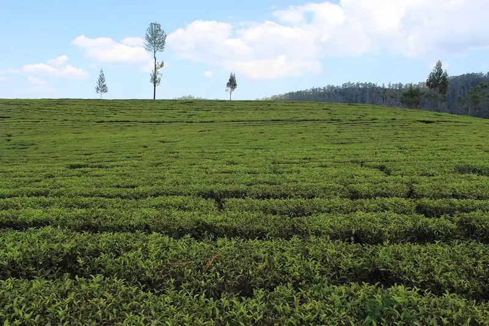
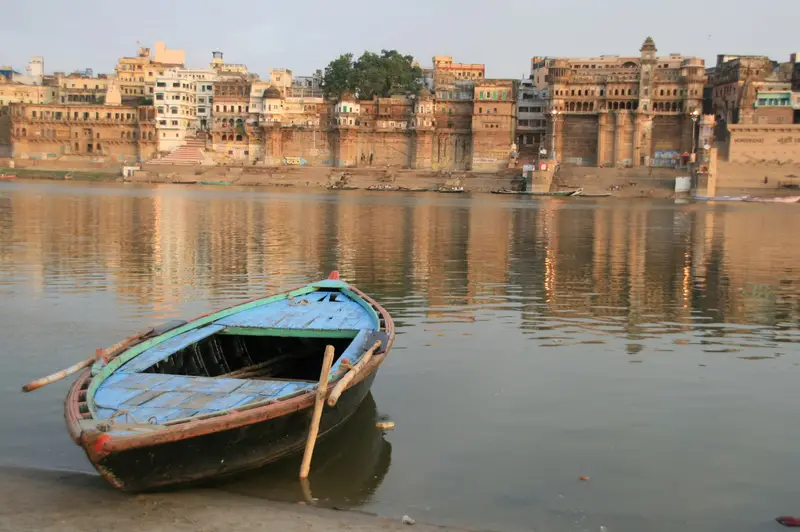
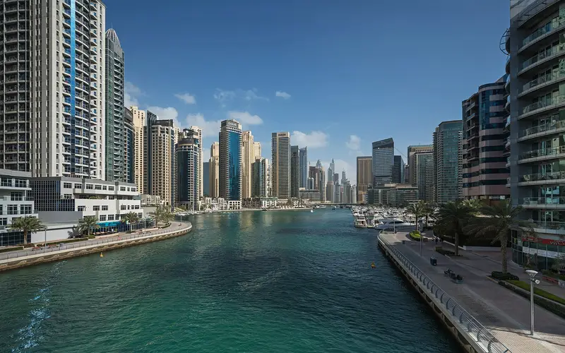

Trip guides for India
When to go, how to get there, local rules and what to pack

Trip guide · Best: Oct–Dec for clear views; January is the coldest
Nepal in December and January: weather, snow, trekking and a trip plan
Plan Nepal for December or January from India: temperatures in Kathmandu, Pokhara, Nagarkot and Chitwan, where it snows, festivals from Yomari Punhi to Maghe Sankranti, a 6-day plan, the Everest mountain flight, winter trekking rules, flights and border crossings, documents and what to wear.
Plan your tripTrip guide · Best: Oct–Dec for clear skies; Dec–Feb is winter
Bhutan in December and January: weather, snow, festivals and a trip plan
Plan Bhutan for December or January from India: temperatures in Paro, Thimphu and Punakha, the chances of snow, the Dochula festival on 13 December, National Day, black-necked cranes, a 6-day plan, flights and the road via Phuentsholing, SDF and what to wear.
Plan your trip
Trip guide · Best: Oct–Jun; Dec–Jan are the coldest
Ooty in December and January: weather, a 2–3 day trip plan and what to wear
Plan Ooty for December or January: IMD temperatures, why you'll see frost but not snow, a 2-day and 3-day trip plan, the trip from Bangalore by car, bus or train, the toy train, the e-pass and plastic ban, and what to wear.
Plan your trip
Trip guide · Best: Oct–Mar; Dec–Jan are the coldest
Varanasi in December and January: weather, a 2–3 day trip plan and what to wear
Plan Varanasi for December or January: IMD temperatures, winter fog and train delays, a 2-day and 3-day trip plan, Ganga aarti and Kashi Vishwanath timings, New Year crowds, the new ropeway, Sarnath, getting there and what to wear.
Plan your trip
Trip guide · Best: Dec–Apr; Feb–Apr are the driest
Andaman in December and January: weather, ferries and what to pack
Plan an Andaman trip for December or January: Port Blair weather and rain, ferries to Havelock (Swaraj Dweep) and Neil (Shaheed Dweep), Jolly Buoy, permits, beach and coral rules, the Island Tourism Festival and what to wear.
Plan your trip
Trip guide · Best: Oct–Dec for clear views; Jan is the coldest
Darjeeling in December and January: weather, snow and what to wear
Plan Darjeeling for December or January: IMD temperatures, the real chances of snowfall, Tiger Hill sunrise and its vehicle pass, toy train joy rides, Sandakphu snow, getting there from Bagdogra and NJP, and what to wear.
Plan your tripTrip guide · Best: Dec–Feb; snow likelier in Jan–Feb
Shimla in December and January: snow, weather and what to wear
Plan Shimla for December or January: IMD temperatures, when snow usually comes, the Kalka–Shimla toy train, Kufri and Narkanda, the ice rink and winter carnival, snow roads, and what to wear.
Plan your trip
Trip guide · Best: Dec–Feb for snow
Kashmir in December: weather, snow and what to wear
Plan Srinagar, Gulmarg, Pahalgam and Sonamarg for December: IMD temperatures, when snow comes, Chillai Kalan, the Gulmarg Gondola, trains and roads in winter, phone SIMs, and what to wear and pack.
Plan your trip
Trip guide · Best: Depends on the country: see the table
International trips from India: where to go, by flight time, season and visa
Choosing a foreign trip from India? Compare Nepal, Bhutan, Sri Lanka, the Maldives, Dubai, Thailand, Vietnam, Malaysia, Hong Kong, Singapore, Mauritius, Bali, Japan and Europe by distance and rough flying time from Delhi and Mumbai, the best months, the visa type for Indians, and whether each suits a honeymoon or a family trip. Links to our trip guides, packing lists and baggage rules.
Plan your trip
Trip guide · Best: Nov–Feb
Goa for Christmas and New Year: a simple trip guide
Plan Goa for December and January: the weather, Dabolim or Mopa airport, trains, taxis and scooters, beach rules and fines, New Year crowds and tips for foreign visitors.
Plan your trip
Trip guide · Best: Dec–Jan
Where to go in India in December and January
Beach, snow, forts or backwaters? Compare Goa, Andaman, Manali, Shimla, Rishikesh, Darjeeling, Bhutan, Nepal, Singapore, Dubai, Sri Lanka, Thailand, Vietnam, Ooty, Varanasi, Jaipur, Udaipur and Kerala for a Christmas or New Year trip: weather, how to get there, crowds and what to pack.
Plan your trip
Trip guide · Best: April to October is drier; December to February is the wettest
Bali trip from India: visa, a 6-day itinerary, honeymoon tips and the weather
Plan a Bali trip from India: the visa on arrival for Indians (Rp 500,000 for 30 days, also online as an e-VOA), the All Indonesia arrival card, the Rp 150,000 Bali tourist levy, direct flights from Delhi and Bengaluru, a 5 or 6-day plan for Ubud, Seminyak, Uluwatu and Nusa Penida, honeymoon tips, the weather in December, veg food and getting around.
Plan your trip
Trip guide · Best: Oct–Dec for clear skies; avoid the June–September monsoon
Bhutan by road from India: the Phuentsholing permit, the route and driving your own car
How to go to Bhutan by road from India: reach Bagdogra, NJP or Hasimara, cross at Jaigaon and Phuentsholing, get the entry permit with a passport or voter ID, pay the SDF, book a guide, and the Nu 4,500 a day rule for your own car. Official rules, checked 21 Nov 2026.
Plan your trip
Trip guide · Best: November to March is warm, not hot; May to September is very hot
Dubai trip from India: visa, a 5-day plan with an Abu Dhabi day trip, and the weather in December
Plan a Dubai trip from India: how Indians get a UAE tourist visa (AED 200 for 30 days through a tourism company), the visa on arrival for Indians with a US, UK or EU visa or residence, direct flights from Indian cities, a 5-day plan with an Abu Dhabi day trip, the weather in December, the metro and nol card, food, VAT refunds and emergency numbers.
Plan your trip
Trip guide · Best: May, June and September for mild weather; December for Christmas markets and snow in the Alps
Europe trip from India: the Schengen visa, a 10-day Switzerland, Paris and Italy plan, and the best time to go
Plan your first Europe trip from India: the Schengen visa for Indians (which country to apply to, documents, travel insurance, the €90 fee and the 15-day processing time), the multi-year visa rule for Indians, direct flights from Indian cities to Zurich, Paris, Milan and Rome, a 10-day Switzerland, France and Italy itinerary, the Swiss Travel Pass, the weather by month and veg food tips.
Plan your trip
Trip guide · Best: May to October for sightseeing and Kazbegi; late December to March for snow and skiing in Gudauri
Georgia trip from India: the e-visa, a 6-day plan and Georgia in December
Plan a Georgia trip from India: the Georgian e-visa for Indians (US$20 plus a 2% service fee and a US$15 DuVerify step), visa-free entry for 90 days in 180 with a valid US, UK, EU or Schengen visa or residence permit, flights from India, a 6-day Tbilisi, Kazbegi and Kakheti plan, Gudauri skiing and Georgia in December, and veg food tips.
Plan your trip
Trip guide · Best: October to December is dry, sunny and cooler; June to September is hot, wet and the typhoon season
Hong Kong trip from India: pre-arrival registration, a 4-day plan with Disneyland and the weather in December
Plan a Hong Kong trip from India: the free pre-arrival registration (PAR) that lets Indians visit for up to 14 days without a visa, direct flights from Delhi, Mumbai, Bengaluru, Chennai and Hyderabad, a 4-day itinerary with Disneyland, Ocean Park and Macau, the weather in December, the Octopus card, and veg food tips.
Plan your trip
Trip guide · Best: Late March to May for cherry blossom and spring; October and November for autumn colours; December to February is cold but mostly dry in Tokyo
Japan trip from India: visa, a 7-day plan, December weather and cherry blossom
Plan a Japan trip from India: the Japan eVISA for Indians through VFS (₹500 visa fee from 1 July 2026, plus the VFS fee), direct flights from Delhi, Mumbai and Bengaluru to Tokyo, a 7-day Tokyo, Kyoto and Osaka itinerary, the Japan Rail Pass, the weather in December, cherry blossom dates, and veg food tips.
Plan your trip
Trip guide · Best: June to September for lakes and hikes; December to March for snow near Almaty
Kazakhstan trip from India: the visa-free rule, a 5-day Almaty plan and Almaty in winter
Plan a Kazakhstan trip from India: no visa for Indians for up to 14 days at a time (42 days in 180), direct flights from Delhi and Mumbai to Almaty, a 5-day Almaty itinerary with Shymbulak, Kok Tobe and Charyn Canyon, Almaty weather in winter, getting around, and veg food tips.
Plan your tripTrip guide · Best: December to February for Langkawi and Penang; avoid the east coast islands from November to January
Malaysia trip from India: visa-free entry, the MDAC, a 5-day plan and the weather in December
Plan a Malaysia trip from India: visa-free stays of up to 30 days for Indians until 31 December 2026, the free MDAC arrival card, direct flights from Indian cities, a 5-day plan for Kuala Lumpur, Genting and Langkawi or Penang, the weather in December, a Singapore + Malaysia combo, getting around and Indian food.
Plan your tripTrip guide · Best: January to April is driest around Malé; May to November is wetter
Maldives trip from India: visa, resort or local island, a 5-day plan and honeymoon tips
Plan a Maldives trip from India: the free visa on arrival and what Maldives Immigration asks for, the IMUGA traveller declaration, direct flights from Indian cities, resort vs local-island stays, speedboat and seaplane transfers, the green tax (US$12 or US$6 a night), a 5-day plan, honeymoon tips, the weather in December, veg food and rules on alcohol and idols.
Plan your trip
Trip guide · Best: May to November is drier and less humid; December to April is hot, with more rain and the cyclone season
Mauritius trip from India: visa, a 5-day plan, honeymoon tips and the weather in December
Plan a Mauritius trip from India: no visa needed for Indians (Mauritius Passport and Immigration Office) and what you must show on arrival, the free All-in-One Travel Digital Form, direct flights from Delhi, Mumbai, Chennai and Bengaluru, a 5-day itinerary with Grand Bassin, Chamarel, Le Morne and Île aux Cerfs, honeymoon tips, the weather in December from Mauritius Meteorological Services, and veg food.
Plan your trip
Trip guide · Best: February to April is driest; November to January is the wettest
Singapore trip from India: visa, a 5-day itinerary and the weather in December
Plan a Singapore trip from India: the visa for Indians (₹2,100 fee plus up to ₹1,300 agent fee, 3 to 5 working days), the SG Arrival Card, direct flights from Indian cities, a 4 or 5-day itinerary, the weather in December, Christmas events, the MRT, GST refunds and emergency numbers.
Plan your trip
Trip guide · Best: January to March for the west and south coasts and the hills; May to September for the east coast
Sri Lanka trip from India: free ETA, a 6-day itinerary and the Ramayana trail
Plan a Sri Lanka trip from India: the free ETA for Indians (30 days, apply online before you fly), direct flights from Indian cities, a 6-day itinerary with Colombo, Sigiriya, Kandy, Nuwara Eliya and Ella or Galle, the Ramayana sites, the weather in December and January, trains, food and emergency numbers.
Plan your trip
Trip guide · Best: November to February is cooler and mostly dry; May to October is the rainy season
Thailand trip from India: visa, a 5 to 7-day plan and the weather in December
Plan a Thailand trip from India: the 30-day visa exemption for Indians (from 15 Sep 2026), the free TDAC arrival card, direct flights from Indian cities to Bangkok, Phuket and Krabi, a 5 to 7-day itinerary, the weather in December, getting around, and veg and Jain food tips.
Plan your trip
Trip guide · Best: March to May for the whole country; December to April for the south; February to August for Hoi An
Vietnam trip from India: e-visa, a 7-day itinerary and the weather in December
Plan a Vietnam trip from India: the e-visa for Indians (US$25 single entry, up to 90 days), the pre-arrival form, direct flights from Indian cities to Hanoi and Ho Chi Minh City, a 5 or 7-day itinerary with Ha Long Bay and Hoi An, the weather in December by region, getting around, and veg and Jain food tips.
Plan your tripTrip guide
Republic Day parade tickets 2027: how to book, price and what you can't take
How to book Republic Day 2027 parade and Beating Retreat tickets on the Defence Ministry's Aamantran site or at Delhi counters, last year's prices and dates, the ID you need and what isn't allowed.
Plan your trip
Trip guide · Best: Oct–Mar; rafting Sep–Jun
Rishikesh in December and January: weather, rafting and what to wear
Plan Rishikesh for December or January: IMD temperatures, whether rafting is open, licensed camps, Ganga aarti times, which bridges are open, the Haridwar Kumbh from 14 January, getting there and what to wear.
Plan your trip
Trip guide · Best: Sep–Mar
Udaipur in winter: a 2–3 day trip plan for December and January
Plan Udaipur for December or January: IMD temperatures, a 2-day and 3-day plan, City Palace and Lake Pichola boat times, the Shilpgram Utsav, day trips to Kumbhalgarh and Ranakpur, getting there and what to wear.
Plan your trip
Trip guide · Best: 23–26 Jan 2027
Republic Day long weekend 2027: where to go, and how to see the parade
26 January 2027 is a Tuesday, so one day off gives you 4 days. Compare Jaipur, Manali, Goa and Kerala, and see how Republic Day parade tickets work.
Plan your tripTrip guide · Best: Oct–Mar
Jaipur in winter: a simple trip guide for Christmas and New Year
Plan Jaipur for December and January: cold mornings, monument hours and the composite ticket, getting there from Delhi and Agra, the metro, markets and January festivals.
Plan your trip
Trip guide · Best: Nov–Feb
Kerala in winter: Kochi, Munnar and the backwaters at Christmas and New Year
Plan Kerala for December and January: the weather, airports, the Cochin Carnival in Fort Kochi, houseboats in Alappuzha, Eravikulam in Munnar, beach safety and the 1 January dry day.
Plan your trip
Trip guide · Best: Dec–Feb for snow
Manali in winter: snow, roads and a New Year trip guide
Plan Manali for December and January: when snow usually comes, getting there from Delhi and Chandigarh, Rohtang and the Atal Tunnel in winter, green tax, snow driving and what to pack.
Plan your tripNew picks every day on Telegram and WhatsApp
Hand-picked bags, luggage, watches and travel essentials on sale, plus quick buying tips. No spam.